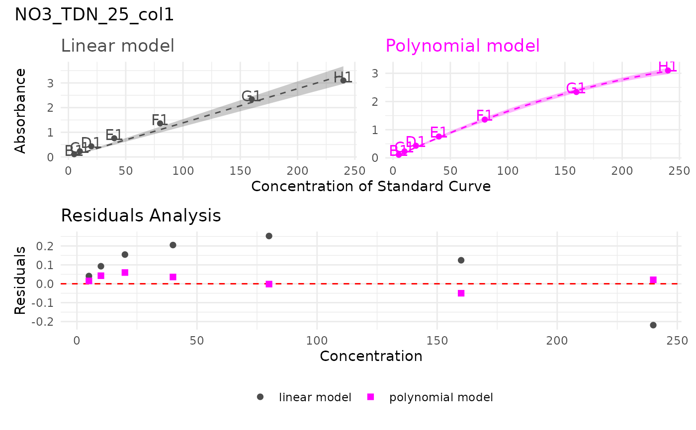
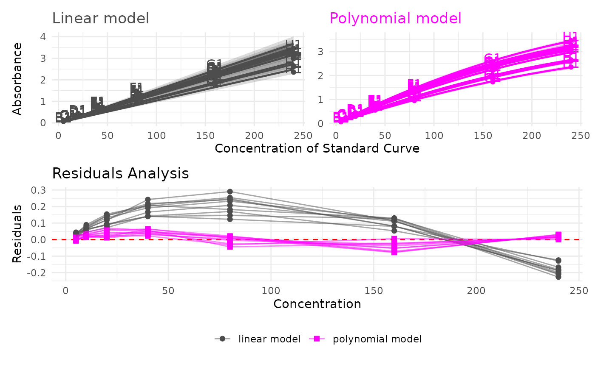
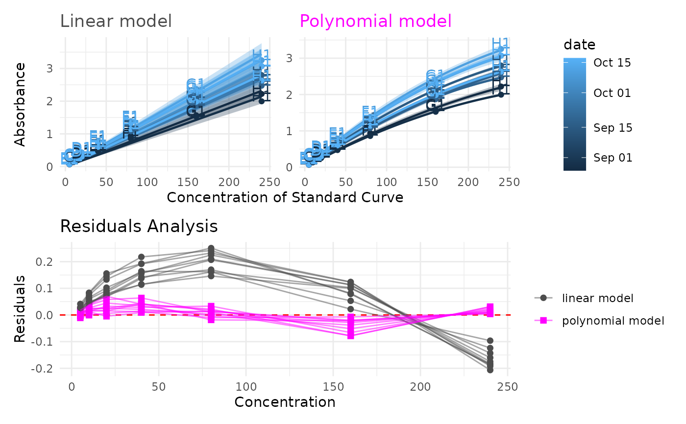

Review linear vs. polynomial model choice across several standard curves
Source:R/model_choice.R
review_model_choice.RdSamples (or uses all of) the curves in data, fits both a linear and
polynomial model to each, and builds comparison + residual plots to
help decide which model is more appropriate. Two display modes: a
paginated list of individual per-curve plots (overplot = FALSE,
the default), or one combined figure overplotting all selected
curves together (overplot = TRUE), better suited to reviewing a
larger number of curves at once.
Usage
review_model_choice(
data,
n_curves = NULL,
curve_id_col = "unique_curve_id",
conc_col = "std_conc",
value_col = "abs_corrected",
through_origin = TRUE,
unit_col = NULL,
colour_col = NULL,
random_sample = TRUE,
seed = NULL,
overplot = FALSE,
overplot_smooth_alpha = 0.3,
overplot_smooth_linewidth = 0.8,
overplot_smooth_linetype = 1,
legend_position = "right"
)Arguments
- data
A tibble containing data for multiple standard curves, with the columns referenced by
curve_id_col,conc_col, andvalue_col.- n_curves
Number of curves to review. If
NULL(the default), all curves indataare used. If greater than the number of available curves, a message is printed and all available curves are used instead.- curve_id_col
Name of the column identifying which curve a row belongs to. Defaults to
"unique_curve_id".- conc_col
Name of the column containing concentration. Defaults to
"std_conc".- value_col
Name of the column containing (blank-corrected) absorbance. Defaults to
"abs_corrected".- through_origin
Whether to force both models through the origin. Defaults to
TRUE.- unit_col
Passed through to
plot_model_comparison()/plot_std(). Defaults toNULL(no unit shown).- colour_col
Passed through to
plot_model_comparison()— only meaningful whenoverplot = TRUE(the paginated mode shows one curve at a time, so colour is moot there). IfNULL(the default), curves are coloured bycurve_id_col, which can look like a rainbow with many curves, since curve IDs aren't ordered meaningfully. Set to something scientifically relevant instead — e.g. a date or dilution-factor column — to colour by what actually matters for interpreting the fit.- random_sample
Whether to select curves randomly (
TRUE, the default) or simply take the firstn_curvesas they appear indata.- seed
Optional random seed, for reproducible sampling when
random_sample = TRUE.- overplot
If
FALSE(the default), returns a named list with one comparison+residual pair per curve. IfTRUE, returns one combined figure overplotting all selected curves together.- overplot_smooth_alpha, overplot_smooth_linewidth, overplot_smooth_linetype
Smooth-curve styling used only when
overplot = TRUE— the defaultplot_std()styling (thin, dashed, faint) is hard to see with many overlapping curves. Defaults to a more visiblealpha = 0.6,linewidth = 0.8,linetype = 1(solid).- legend_position
Passed through to
plot_model_comparison()—ggplot2legend.positionvalue for the comparison plot's colour legend, relevant whencolour_colis set. Also applied to the overplot residual plot's own model-type legend (linear vs. polynomial), so both legends stay visually consistent. Defaults to"none".
Value
Either a named list (one entry per curve, each with
models, comparison_plot, and residual_plot), or a single
combined patchwork figure — see overplot.
Examples
paginated_review <- review_model_choice(std_corrected_TDN, n_curves = 5, seed = 1)
# Look at the polynomial model fit of a single curve
paginated_review$NO3_TDN_25_col1$models$poly
#>
#> Call:
#> stats::lm(formula = stats::reformulate(terms, response = value_col),
#> data = curve_data)
#>
#> Coefficients:
#> std_conc I(std_conc^2)
#> 1.910e-02 -2.613e-05
#>
# Look at a single curve
paginated_review[[1]]$comparison_plot /
(paginated_review[[1]]$residual_plot +
ggplot2::theme(legend.position = "bottom")) +
patchwork::plot_annotation(title = names(paginated_review[1]))

# Multiple curve observation
review_model_choice(
std_corrected_TDN, n_curves = 10, overplot = TRUE,
legend_position = "bottom", overplot_smooth_alpha = 0.2)

# Multiple curve observation with additional colour aesthetic
review_model_choice(std_corrected_TDN, n_curves = 10, overplot = TRUE, colour_col = "date")
